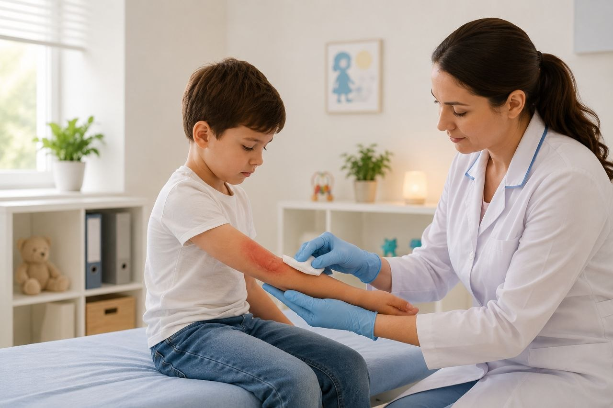

Brûlures chez l'enfant
الحروق عند الطفل
Tout ce que les parents doivent savoir sur les brûlures pédiatriques : classification, premiers soins, traitement chirurgical et récupération.
كل ما يجب على الأولياء معرفته عن الحروق لدى الأطفال: التصنيف، الإسعافات الأولية، العلاج الجراحي والتعافي.

Qu'est-ce qu'une brûlure ?
ما هو الحرق؟
Une brûlure est une lésion traumatique des tissus causée par l'action de la chaleur, de l'électricité, de produits chimiques ou de radiations. Chez l'enfant, les brûlures représentent l'une des causes les plus fréquentes de traumatisme accidentel et peuvent entraîner des séquelles fonctionnelles et esthétiques graves. La peau de l'enfant étant plus fine et plus fragile que celle de l'adulte, une exposition thermique de courte durée peut provoquer des lésions profondes.
الحرق هو إصابة نسيجية صدمية ناتجة عن تأثير الحرارة، الكهرباء، المواد الكيميائية أو الإشعاع. عند الطفل، تُمثل الحروق واحدة من أكثر أسباب الصدمات العرضية شيوعًا وقد تسبب عواقب وظيفية وجمالية خطيرة. بما أن جلد الطفل أرق وأضعف من جلد البالغ، فإن التعرض للحرارة لفترة قصيرة قد يسبب إصابات عميقة.
Causes et mécanismes
الأسباب والآليات
Les brûlures chez l'enfant peuvent avoir plusieurs origines :
قد تكون الحروق عند الطفل من عدة أصول:
- Brûlures thermiques : contact avec liquides chauds (thé, café, soupe) — cause la plus fréquente chez le nourrisson et le jeune enfant
- Brûlures par flamme : contact avec feu, bougies, gaz — plus fréquentes chez l'enfant d'âge scolaire
- Brûlures par contact : surfaces chaudes (fer à repasser, poêle, radiateur, échappement de moto)
- Brûlures électriques : contact avec prise électrique, fil dénudé, ligne à haute tension
- Brûlures chimiques : contact avec acides, bases, produits ménagers (javel, ammoniaque)
- Brûlures par radiations : exposition excessive au soleil (coup de soleil sévère)
- الحروق الحرارية: التلامس مع السواخن (الشاي، القهوة، الحساء) — السبب الأكثر شيوعًا عند الرضع والأطفال الصغار
- الحروق باللهب: التلامس مع النار، الشموع، الغاز — أكثر شيوعًا عند الأطفال في سن المدرسة
- الحروق بالتلامس: الأسطح الساخنة (المكواة، المقلاة، المدفأة، عادم الدراجة النارية)
- الحروق الكهربائية: التلامس مع القابس الكهربائي، السلك المكشوف، خط الجهد العالي
- الحروق الكيميائية: التلامس مع الأحماض، القواعد، منتجات التنظيف (الجافيل، الأمونياك)
- الحروق بالإشعاع: التعرض المفرط للشمس (حروق شمسية شديدة)
Classification des brûlures
تصنيف الحروق
1. Classification par profondeur
1. التصنيف حسب العمق
- Brûlure du 1er degré : atteinte de l'épiderme uniquement. Rougeur, douleur, pas de cloque. Cicatrisation en 3 à 6 jours sans séquelle.
- Brûlure du 2e degré superficiel : atteinte de l'épiderme et du derme superficiel. Cloques remplies de liquide clair, douleur vive. Cicatrisation en 7 à 14 jours, risque de dyschromie.
- Brûlure du 2e degré profond : atteinte du derme profond. Cloques, peau blanchâtre ou rougeâtre, douleur diminuée (destruction des terminaisons nerveuses). Cicatrisation en 3 à 6 semaines, risque de cicatrice hypertrophique.
- Brûlure du 3e degré : atteinte de toute l'épaisseur de la peau (épiderme, derme, hypoderme). Peau blanche, noire ou brune, indolore (nerfs détruits). Nécessite une greffe de peau.
- Brûlure du 4e degré : atteinte des structures profondes (muscles, os, organes). Gravité extrême, pronostic vital engagé.
- الحروق من الدرجة الأولى: إصابة البشرة فقط. احمرار، ألم، بدون فقاعات. التئام خلال 3 إلى 6 أيام بدون عواقب.
- الحروق من الدرجة الثانية السطحية: إصابة البشرة والأدمة السطحية. فقاعات مليئة بسائل شفاف، ألم حاد. التئام خلال 7 إلى 14 يومًا، خطر تغير اللون.
- الحروق من الدرجة الثانية العميقة: إصابة الأدمة العميقة. فقاعات، جلد أبيض أو مُحمر، ألم مُخفّض (تدمير النهايات العصبية). التئام خلال 3 إلى 6 أسابيع، خطر الندبة الضخامية.
- الحروق من الدرجة الثالثة: إصابة سماكة الجلد كاملة (البشرة، الأدمة، الطبقة تحت الجلدية). جلد أبيض، أسود أو بني، بدون ألم (الأعصاب مُدمّرة). تتطلب زراعة الجلد.
- الحروق من الدرجة الرابعة: إصابة الهياكل العميقة (العضلات، العظام، الأعضاء). خطورة قصوى، الخطر على الحياة.
2. Classification par étendue (règle des 9 de Wallace)
2. التصنيف حسب المساحة (قاعدة 9 لوالاس)
- Tête et cou : 9 % de la surface corporelle (18 % chez le nourrisson)
- Chaque bras : 9 %
- Tronc avant : 18 %
- Tronc arrière : 18 %
- Chaque jambe : 14 % (18 % chez le nourrisson)
- Organes génitaux et périnée : 1 %
- Paume de la main de l'enfant : environ 1 % de sa surface corporelle (méthode alternative pour les petites brûlures)
- الرأس والرقبة: 9% من مساحة الجسم (18% عند الرضيع)
- كل ذراع: 9%
- الجذع الأمامي: 18%
- الجذع الخلفي: 18%
- كل ساق: 14% (18% عند الرضيع)
- الأعضاء التناسلية والعجان: 1%
- كف يد الطفل: حوالي 1% من مساحة جسمه (طريقة بديلة للحروق الصغيرة)
Premiers soins en cas de brûlure
الإسعافات الأولية في حالة الحرق
Arrêter le processus de brûlure est la première étape cruciale. Voici les gestes à effectuer immédiatement :
إيقاف عملية الحرق هو الخطوة الأولى الحاسمة. إليكم الإجراءات الفورية:
- Éloigner l'enfant de la source de chaleur immédiatement
- Refroidir la brûlure sous l'eau du robinet tiède (15-25 °C) pendant 10 à 20 minutes. Ne jamais utiliser de glace directement.
- Retirer les vêtements et bijoux autour de la zone brûlée, sauf s'ils sont collés à la peau
- Ne pas percer les cloques ni retirer les tissus adhérents
- Ne pas appliquer de beurre, d'huile, de pâte dentifrice ou de pommade sur la brûlure
- Couvrir la brûlure avec un drap ou une compresse stérile propre et humide
- Réconforter l'enfant et surveiller les signes de choc (pâleur, frissons, confusion)
- إبعاد الطفل عن مصدر الحرارة فورًا
- تبريد الحرق تحت ماء الصنبور الفاتر (15-25 درجة مئوية) لمدة 10 إلى 20 دقيقة. لا تستخدموا الجليد مباشرة.
- إزالة الملابس والمجوهرات حول المنطقة المحروقة، إلا إذا كانت ملتصقة بالجلد
- لا تفقّعوا الفقاعات ولا تزيلوا الأنسجة الملتصقة
- لا تضعوا الزبدة، الزيت، معجون الأسنان أو المرهم على الحرق
- غطّوا الحرق بمنديل أو ضمادة معقمة نظيفة ورطبة
- أرحموا الطفل وراقبوا علامات الصدمة (شحوب، قشعريرة، ارتباك)
Signes d'urgence absolue
علامات الطوارئ المطلقة
- Brûlure au visage, au cou, aux mains, aux pieds ou aux organes génitaux
- Brûlure circulaire autour d'un membre (risque de garrot)
- Brûlure étendue (> 5 % de la surface corporelle chez l'enfant)
- Brûlure du 3e degré ou suspicion de 4e degré
- Brûlure électrique ou chimique
- Brûlure chez un nourrisson de moins de 1 an
- Signes de choc (pâleur, frissons, tachycardie, hypotension)
- Inhalation de fumée (toux, dyspnée, suie autour de la bouche)
- حرق في الوجه، الرقبة، اليدين، القدمين أو الأعضاء التناسلية
- حرق دائري حول عضو (خطر الرباط)
- حرق واسع (> 5% من مساحة الجسم عند الطفل)
- حرق من الدرجة الثالثة أو الاشتباه بالدرجة الرابعة
- حرق كهربائي أو كيميائي
- حرق عند رضيع دون سنة واحدة
- علامات الصدمة (شحوب، قشعريرة، تسرع القلب، انخفاض ضغط الدم)
- استنشاق الدخان (سعال، ضيق تنفس، سواد حول الفم)
📊 Statistiques et données clés
📊 الإحصائيات والبيانات الرئيسية
- Incidence mondiale : 1,2 million de brûlures pédiatriques par an
- Mortalité : 250 000 décès par an dans le monde, principalement dans les pays à faible revenu
- Cause la plus fréquente : liquides chauds (scalds) — 60 à 70 % des brûlures chez les enfants de moins de 5 ans
- Âge à risque : pic entre 1 et 4 ans (curiosité et mobilité croissante)
- Sexe : légère prédominance masculine (ratio 1,3:1)
- Localisation préférentielle : membres supérieurs (40 %), tronc (30 %), membres inférieurs (20 %), tête et cou (10 %)
- Brûlures électriques : 3 à 5 % des brûlures, mais responsables de 50 % des admissions en réanimation
- Prévention : 80 % des brûlures pédiatriques sont évitables
- المعدل العالمي: 1.2 مليون حرق طفولي سنويًا
- الوفيات: 250000 وفاة سنويًا في العالم، بشكل رئيسي في الدول ذات الدخل المنخفض
- السبب الأكثر شيوعًا: السواخن (السكالدز) — 60 إلى 70% من الحروق عند الأطفال دون 5 سنوات
- العمر المعرض للخطر: ذروة بين 1 و4 سنوات (الفضول والحركة المتزايدة)
- الجنس: تفوق طفيف للذكور (نسبة 1.3:1)
- الموقع المفضل: الأطراف العلوية (40%)، الجذع (30%)، الأطراف السفلية (20%)، الرأس والرقبة (10%)
- الحروق الكهربائية: 3 إلى 5% من الحروق، لكنها مسؤولة عن 50% من دخول العناية المركزة
- الوقاية: 80% من الحروق الطفولية يمكن تجنبها
Traitement chirurgical et médical
العلاج الجراحي والطبي
Brûlures du 1er et 2e degré superficiel
الحروق من الدرجة الأولى والثانية السطحية
- Pansements hydrocolloïdes ou hydrogels pour maintenir un environnement humide
- Antalgiques adaptés au niveau de douleur
- Antibiotiques uniquement en cas de surinfection
- Surveillance de la cicatrisation et prévention des cicatrices hypertrophiques
- ضمادات هيدروكولويدية أو هيدروجيلية للحفاظ على بيئة رطبة
- مسكنات مناسبة لمستوى الألم
- مضادات حيوية فقط في حالة العدوى الثانوية
- مراقبة التئام الجرح والوقاية من الندبات الضخامية
Brûlures du 2e degré profond et 3e degré
الحروق من الدرجة الثانية العميقة والثالثة
- Réanimation initiale : compensation des pertes liquidiennes (Ringer lactate selon la formule de Parkland), analgésie, nutrition parentérale
- Débridement : excision des tissus nécrotiques
- Greffe de peau : autogreffe (peau prélevée sur une zone saine de l'enfant) ou allogreffe temporaire
- Techniques de reconstruction : lambeaux locaux, expansions tissulaires, microchirurgie pour les séquelles sévères
- Thérapie par pression : vêtements de compression pour prévenir les cicatrices hypertrophiques et les chéloïdes
- Rééducation fonctionnelle : kinésithérapie pour préserver la mobilité articulaire
- الإنعاش الأولي: تعويض فقدان السوائل (رينغر لاكتات حسب صيغة باركلاند)، تسكين الألم، التغذية الوريدية
- إزالة الأنسجة النافقة: استئصال الأنسجة المتنخرة
- زراعة الجلد: زرع ذاتي (جلد مأخوذ من منطقة سليمة من الطفل) أو زرع مؤقت من متبرع
- تقنيات إعادة البناء: الرفارف المحلية، توسيع الأنسجة، الجراحة الدقيقة للعواقب الشديدة
- العلاج بالضغط: ملابس ضاغطة للوقاية من الندبات الضخامية والندبات الندبية
- إعادة التأهيل الوظيفي: العلاج الطبيعي للحفاظ على حركة المفاصل
Séquelles et prévention
العواقب والوقاية
Séquelles possibles
العواقب المحتملة
- Cicatrices hypertrophiques et chéloïdes : excès de cicatrisation, démangeaisons, douleur
- Rétractions cicatricielles : limitation de la mobilité articulaire, déformations
- Dyschromies : changement de coloration de la peau (hyperpigmentation ou hypopigmentation)
- Sensibilité altérée : perte de sensation ou douleur chronique
- Conséquences psychologiques : anxiété, trouble de stress post-traumatique, problèmes d'estime de soi liés aux cicatrices visibles
- Complications oculaires : en cas de brûlure faciale (ectropion, symblépharon)
- الندبات الضخامية والندبات الندبية: فائض التئام، حكة، ألم
- التقلصات الندبية: تقييد حركة المفاصل، تشوهات
- تغيرات اللون: تغير لون الجلد (تصبغ زائد أو ناقص)
- تغير الحساسية: فقدان الإحساس أو ألم مزمن
- العواقب النفسية: قلق، اضطراب ما بعد الصدمة، مشاكل تقدير الذات المرتبطة بالندبات المرئية
- المضاعفات العينية: في حالة الحرق الوجهي (انقلاب الجفن، التلاصق الجفني)
Mesures de prévention
تدابير الوقاية
- Installer des barrières de sécurité devant la cuisine et les sources de chaleur
- Ne jamais laisser un enfant sans surveillance près d'une source de chaleur
- Placer les poignées des casseroles vers l'intérieur de la plaque de cuisson
- Tester la température du bain avant d'y placer l'enfant
- Utiliser des prises électriques sécurisées et ranger les appareils électriques hors de portée
- Conserver les produits chimiques et ménagers dans des armoires verrouillées
- Protéger l'enfant du soleil (crème solaire, vêtements, ombre)
- Éduquer l'enfant aux dangers du feu et des surfaces chaudes
- تركيب حواجز الأمان أمام المطبخ ومصادر الحرارة
- عدم ترك طفل بدون مراقبة قرب مصدر حرارة
- توجيه مقابض الأواني نحو داخل موقد الطبخ
- اختبار حرارة الحمام قبل وضع الطفل فيه
- استخدام قابس كهربائي آمن ووضع الأجهزة الكهربائية بعيدًا عن متناول اليد
- حفظ المواد الكيميائية ومنتجات التنظيف في خزائن مغلقة
- حماية الطفل من الشمس (واقي شمسي، ملابس، ظل)
- تعليم الطفل مخاطر النار والأسطح الساخنة
❓ Questions fréquentes des parents
❓ الأسئلة الشائعة من الأولياء
Même une petite brûlure chez un bébé mérite une évaluation médicale car la peau infantile est très fine et fragile. Une brûlure de plus de 1 % de la surface corporelle, ou située au visage, aux mains, aux pieds ou aux organes génitaux, doit être vue en urgence. Ne sous-estimez jamais une brûlure chez un nourrisson.
حتى الحروق الصغيرة عند الرضيع تستدعي تقييمًا طبيًا لأن جلد الرضيع رقيق وهش للغاية. يجب معالجة الحروق التي تتجاوز 1% من مساحة الجسم، أو تلك الواقعة في الوجه أو اليدين أو القدمين أو الأعضاء التناسلية، على أنها طوارئ. لا تستهينوا أبدًا بالحروق عند الرضع.
Une brûlure du 3e degré se reconnaît à sa couleur blanche, noire ou brune, et au fait qu'elle est indolore car les nerfs sont détruits. Contrairement aux brûlures superficielles, il n'y a pas de cloques. La peau peut avoir une apparence de cuir ou de cire. C'est une urgence absolue nécessitant une prise en charge chirurgicale rapide.
يتم التعرف على الحرق من الدرجة الثالثة بلونه الأبيض أو الأسود أو البني، وكونه غير مؤلم لأن الأعصاب مدمرة. على عكس الحروق السطحية، لا توجد فقاعات. قد يبدو الجلد وكأنه جلد أو شمع. إنه طوارئ مطلقة تتطلب تدخلًا جراحيًا سريعًا.
Non, jamais de glace directement sur une brûlure ! La glice peut causer une lésion par le froid (engelure) et aggraver les dommages tissulaires. La bonne pratique est de refroidir la brûlure sous l'eau du robinet tiède (15-25 °C) pendant 10 à 20 minutes. Cela stoppe la progression de la brûlure et soulage la douleur.
لا، أبدًا لا تضعوا الثلج مباشرة على الحرق! قد يسبب الثلج إصابة بالبرد (تجمد) ويزيد من تلف الأنسجة. الممارسة الصحيحة هي تبريد الحرق تحت ماء الصنبور الفاتر (15-25 درجة مئوية) لمدة 10 إلى 20 دقيقة. يوقف ذلك تقدم الحرق ويخفف الألم.
Consultez les urgences immédiatement en cas de : brûlure au visage, au cou, aux mains, aux pieds ou aux organes génitaux ; brûlure circulaire autour d'un membre ; brûlure étendue (> 5 % de la surface corporelle) ; brûlure du 3e degré ; brûlure électrique ou chimique ; brûlure chez un nourrisson de moins de 1 an ; signes de choc ou inhalation de fumée.
اذهبوا إلى الطوارئ فورًا في حالة: حرق في الوجه أو الرقبة أو اليدين أو القدمين أو الأعضاء التناسلية؛ حرق دائري حول عضو؛ حرق واسع (> 5% من مساحة الجسم)؛ حرق من الدرجة الثالثة؛ حرق كهربائي أو كيميائي؛ حرق عند رضيع دون سنة واحدة؛ علامات الصدمة أو استنشاق الدخان.
Non, ne percez jamais les cloques ! Les cloques forment une barrière naturelle de protection contre les infections. Les percer augmente le risque de surinfection bactérienne et peut retarder la cicatrisation. Si une cloque se rompt d'elle-même, nettoyez délicatement à l'eau et au savon, puis appliquez un pansement stérile.
لا، لا تفقّعوا الفقاعات أبدًا! تشكل الفقاعات حاجزًا طبيعيًا للحماية من العدوى. فقعها يزيد من خطر العدوى البكتيرية الثانوية وقد يؤخر التئام الجرح. إذا انفجرت الفقاعة من تلقاء نفسها، نظفوا بلطف بالماء والصابون، ثم ضعوا ضمادة معقمة.
La durée dépend de la profondeur : 3 à 6 jours pour une brûlure du 1er degré ; 7 à 14 jours pour une brûlure du 2e degré superficiel ; 3 à 6 semaines pour une brûlure du 2e degré profond. Les brûlures du 3e degré nécessitent une greffe de peau et peuvent prendre plusieurs mois à cicatriser complètement, avec un suivi à long terme pour prévenir les séquelles.
تعتمد المدة على العمق: 3 إلى 6 أيام للحرق من الدرجة الأولى؛ 7 إلى 14 يومًا للحرق من الدرجة الثانية السطحية؛ 3 إلى 6 أسابيع للحرق من الدرجة الثانية العميقة. تتطلب الحروق من الدرجة الثالثة زراعة جلد وقد تستغرق عدة أشهر للالتئام الكامل، مع متابعة طويلة الأمد للوقاية من العواقب.
Non, absolument pas ! Le beurre, l'huile, le dentifrice ou les pommades non prescrites peuvent emprisonner la chaleur, favoriser l'infection et compliquer l'évaluation médicale. La seule chose à faire est de refroidir à l'eau tiède, puis de couvrir avec un drap propre et humide en attendant les soins médicaux.
لا، مطلقًا لا! قد تحبس الزبدة، الزيت، معجون الأسنان أو المراهم غير الموصوفة الحرارة، وتشجع العدوى، وتعقد التقييم الطبي. الشيء الوحيد الذي يجب فعله هو التبريد بالماء الفاتر، ثم تغطية المنطقة بمنديل نظيف ورطب في انتظار العناية الطبية.
Les brûlures du 1er et 2e degré superficiel guérissent généralement sans cicatrice visible. Les brûlures du 2e degré profond et du 3e degré peuvent laisser des cicatrices. Une prise en charge précoce et adaptée (greffe de peau, vêtements de compression, kinésithérapie) minimise considérablement les séquelles esthétiques et fonctionnelles. Le suivi régulier est essentiel.
تلتئم الحروق من الدرجة الأولى والثانية السطحية عادةً بدون ندبات مرئية. قد تترك الحروق من الدرجة الثانية العميقة والثالثة ندبات. يقلل التكفل المبكر والمناسب (زراعة الجلد، الملابس الضاغطة، العلاج الطبيعي) بشكل كبير من العواقب الجمالية والوظيفية. المتابعة المنتظمة ضرورية.
Votre enfant a subi une brûlure ?
طفلكم تعرض لحرق؟
Contactez-nous immédiatement ou présentez-vous aux urgences. Une prise en charge rapide et spécialisée est essentielle pour limiter les séquelles et garantir la meilleure cicatrisation possible.
اتصلوا بنا فورًا أو اذهبوا إلى الطوارئ. التكفل السريع والمتخصص ضروري للحد من العواقب وضمان أفضل التئام ممكن.